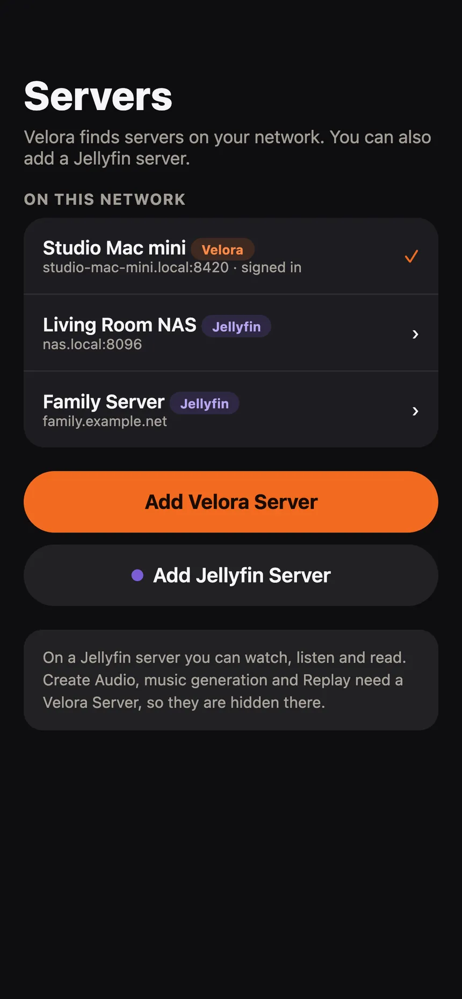

Jellyfin
Velora works with Jellyfin in two ways. You can use either, or both.

1. Sign in to a Jellyfin server from the apps
New in 2.6. In the Velora app, choose Add Jellyfin Server (on Apple TV, the Jellyfin sign-in option). Jellyfin addresses default to port 8096. Sign in with your Jellyfin username and password; the access token is stored in the Keychain.
- Movies, shows, music, audiobooks and books from Jellyfin appear with their artwork, tracks, resume points and watched state.
- Files that the device can play are direct-played. Otherwise Jellyfin transcodes them.
- Intro and credits segments come from chapters; “More like this” comes from Jellyfin.
Velora-only features are hidden on a Jellyfin server: Create Audio, music generation, Replay, remote control, pins, playlists and Velora's recommendations.
Known limitations: manga isn't supported on Jellyfin; text subtitles aren't shown as separate tracks when a file direct-plays; downloads use the original file only.
2. Point Velora Server at your Jellyfin folders
Velora Server reads Jellyfin libraries as they are: the Episodes folder, season folders, .nfo files, local art and Jellyfin's intro data. Velora keeps its own copies of metadata and art, so nothing is lost if you later remove Jellyfin, and it never writes into the folders. See Adding media folders.